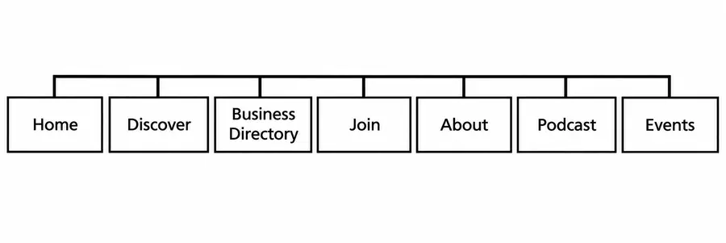
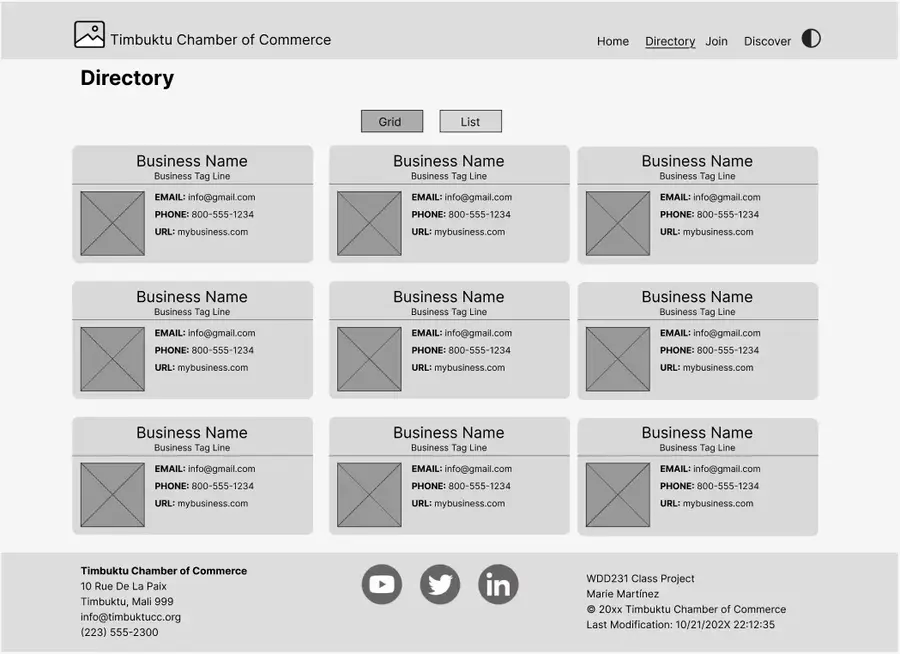
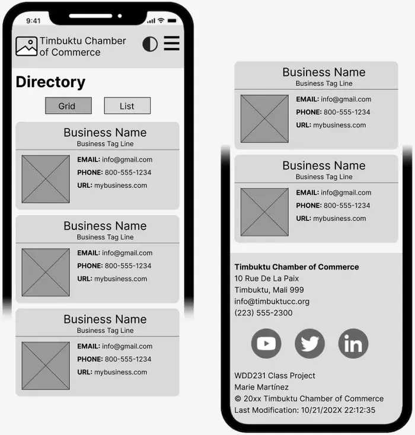

WDD 231 · Individual Project Site Plan
CIDOL World Incorporation
1. Site Name
CIDOL World Incorporation — a multinational Information Technology firm headquartered in Abuja, Nigeria. The name, paired with a globe-and-network wordmark, is the site's primary brand identifier.
2. Site Purpose
The site serves as a hub for multinational IT solutions, offering service and portfolio information alongside career opportunities. It features a client project inquiry form (home page) and a talent membership form (Join page) to support engagement with prospective clients and candidates.
3. Target Market
Small and medium IT firms and businesses in digital communications in the city of Abuja and surrounding areas.
4. Site Goals
- Improve member engagement by providing valuable resources and networking opportunities.
- Attract new IT and communication businesses and encourage economic development in the community.
- Improve the visibility and reputation of CIDOL World as a trusted authority in local business and technology matters.
5. User Personas
| Persona | Profile | Needs |
|---|---|---|
| Divine — Small Business Owner | 25-year-old entrepreneur who owns a small IT firm in town. | Networking opportunities, business resources, and marketing support to grow her business. |
| Thomas — Corporate Executive | 47-year-old executive at a large digital communication company. | Partnership opportunities, economic development resources, and networking with other business leaders. |
| Francis — The New Resident | Recently moved into the community. | Business directories, event calendars, and community service opportunities. |
6. Scenarios
- What is the best software solution for a growing small business?
- Where can I find contact information for the company's directors?
- A local business owner wants to join CIDOL World's talent network and visits the site to learn about membership tracks and how to apply.
- A community member is looking for upcoming events and workshops hosted by CIDOL World, and visits the Events page to browse and plan to attend.
- A visitor considering relocating to Abuja explores the Discover page for information on the local tech scene, talent pipeline, and quality of life.
7. SEO Plan
- Use relevant IT-services and Abuja-based keywords in page titles, meta descriptions, and body content.
- Verify the site on Google Business Profile once a live domain is secured.
- Encourage inbound links from client organizations listed in the Client Directory.
- Use descriptive, unique
<title>and meta description tags plus Open Graph tags on every page.
8. Design Brief
Primary color: Deep Indigo Navy — headers, footer, navigation, and headings, to read as
stable and trustworthy for an enterprise IT brand.
Secondary color: Warm Amber/Gold — buttons, active states, and accents; provides a warm,
human contrast against the navy.
Accent color: Deep Teal — links and secondary actions.
Background color: Warm off-white — page background, keeping long-form content easy to
read.
Text color: Near-black charcoal for body copy, meeting AA contrast against both the off-white
background and white cards.
Font family: Fraunces (serif) for headings and display text, paired with
Inter (sans-serif) for body copy, navigation, and UI labels — a clear serif/sans pairing that
keeps the brand feeling editorial rather than generic SaaS. A light/dark theme toggle (top right of every page)
swaps the palette for low-light viewing, persisted with localStorage.
9. Site Map

10. Wireframe (Desktop)

11. Wireframe (Mobile)

Planned JavaScript Interactions
- Light/dark theme toggle with
localStoragepersistence (every page). - Mobile navigation open/close toggle (every page).
- Dynamic footer: current year and document last-modified date.
- Client Directory: grid/list view toggle and industry filter, rendered from an array of client objects using template literals.
- Join page: talent membership form validation, dynamic success message, and a returning-applicant greeting
read from
localStorage.
This plan may be adjusted as the final build in Stage 3 is completed.